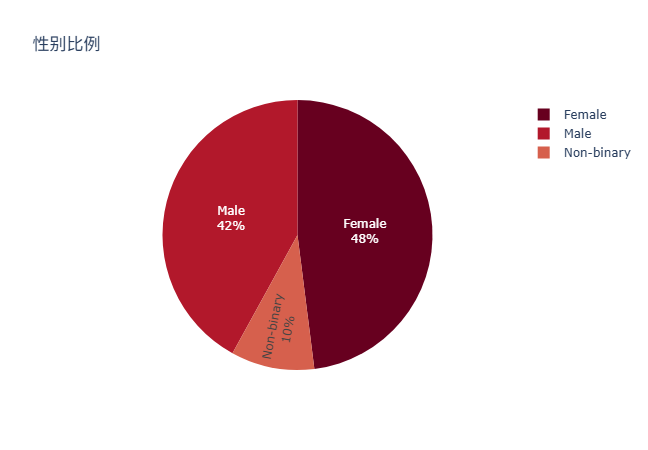
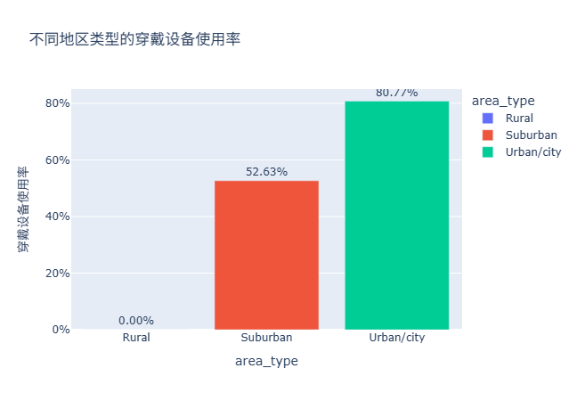

过敏预警应用团队 — 访谈与问卷数据
团队信息
团队名称：You know, HCI is a good lesson
团队成员：赵兰洋（202222130199）、刘与同（202200130022）、姜祎（202200130084）
项目简介
我们的项目旨在开发一款智能手机应用程序，为过敏、哮喘患者以及老年人等敏感人群提供精细化、实时化和个性化的季节性过敏原暴露信息。该应用将利用定位服务、推送通知以及与可穿戴设备的整合，向用户提示高风险区域，建议调整出行路线，并监测生理指标，从而在季节交替期间降低健康风险。
一、过敏预警应用 — 4 名潜在用户完整访谈记录
以下内容为四位潜在用户（U1–U4）的完整访谈文本，包含访谈问题、回答及追问。
受访者 U1：张女士（28岁，教师，对花粉过敏）
采访者（I）：您好，非常感谢您抽出时间来参加我们的访谈。首先想了解一下，您平时的日常生活大致是怎样的？
张女士（R）：我平时主要在学校工作，白天要上课、值班，偶尔带学生做活动。放学后一般会在校园散步。
I：那在季节变化的时候，您有哪些户外活动？
R：春天和秋天我会在校园操场值班或者散步，比较喜欢呼吸新鲜空气，但花粉季节常常会打喷嚏、眼睛痒。
I：您平时会使用手机应用或网站获取健康或空气质量相关的信息吗？
R：会的，我经常用“墨迹天气”和“健康中国”的空气质量功能，看一下花粉指数或者空气状况。
主题一：季节性过敏与呼吸敏感经历
I：能描述一下您上一次过敏发作的情况吗？当时的环境是怎样的？
R：是春天的时候，在学校操场值班，风挺大。那天我没戴口罩，结果不到十分钟就开始打喷嚏，鼻子也特别痒。
I：那您觉得是什么引发了症状？
R：应该是空气里的花粉吧，那几天校园外的树开得很旺。
I：这种情况对您当天的工作有影响吗？
R：有的，我得一直擦鼻子，嗓子也不舒服，上课说话很费劲。
I（追问）：您觉得这次的过敏比以往更严重的原因是什么？
R：可能那天风大、空气干，花粉浓度更高吧，而且我没提前查空气质量。
主题二：日常活动与出行影响
I：平时您在计划户外活动时，会怎么考虑过敏风险？
R：一般会看天气预报和空气指数。如果花粉高，就戴口罩或者尽量不去操场。
I：能举个例子，上一次因为空气不好而改变计划的情况吗？
R：上个月原本要带学生到校外参观，但那天空气污染预警，我和同事决定改期。
I（追问）：这次经历对您之后的习惯有什么影响？
R：我之后会提前一天查天气，不再临时决定。
主题三：信息来源与工具使用
I：您通常从哪里查看空气质量或过敏原信息？
R：手机App，主要是天气类App。
I：这些信息对您有帮助吗？
R：有一定帮助，但我希望能更具体一点，比如区分不同街区的花粉浓度。
I：您觉得现有信息最大的不足是什么？
R：太笼统，比如只显示“花粉高”，但不知道具体时间段。
I（追问）：如果有一个App能结合定位提醒花粉风险，您会用吗？
R：当然会，我希望它还能推荐合适的出行时间。
I：非常感谢，最后还有什么想补充的吗？
R：希望未来能有语音提醒或日历功能，这样不用天天查。
受访者 U2：李先生（35岁，程序员，轻度哮喘）
I：能简单介绍一下您的日常生活和工作环境吗？
R：我在一家互联网公司上班，坐办公室时间比较长，通勤单程大概40分钟，骑电动车为主。
I：您平时会做哪些户外活动？
R：不太多，就是上下班通勤和周末偶尔跑步。
I：您会使用健康类App吗？
R：会的，我用小米手环和“Zepp Life”，监测睡眠和呼吸。
主题一：过敏与呼吸问题经历
I：能回忆一下上一次呼吸不适的情形吗？
R：去年秋天，空气污染特别严重，那几天我通勤时一直胸闷、咳嗽。
I：当时您在哪里？
R：在路上骑电动车，靠近主干道，灰尘挺多。
I：这对您的工作有影响吗？
R：有，我咳得厉害，只能请假一天。
I（追问）：您觉得那次比其他时候严重的原因是什么？
R：空气污染叠加雾霾，我又忘记戴口罩。
主题二：日常活动与调整
I：您是否会根据空气质量改变出行方式？
R：会，我经常提前查AQI，如果超标就不开窗或坐地铁。
I：有因为天气或空气问题取消过活动吗？
R：有一次朋友约爬山，查到花粉指数很高，我就没去。
I（追问）：那次之后您有什么改变？
R：我开始订阅空气质量提醒功能。
主题三：信息获取与评价
I：您主要通过什么渠道获取空气质量信息？
R：手机App和手环联动通知。
I：这些信息准确吗？
R：整体还行，但没有结合我的位置，比如上班路上不同区空气差异大。
I（追问）：您会觉得如果有自动位置提醒会更方便吗？
R：是的，而且如果能结合手环数据提醒更好，比如检测到呼吸频率变化时。
I：您还有其他建议吗？
R：希望App能自动关联路线规划，提示“此路段花粉高，请绕行”。
受访者 U3：王同学（21岁，大学生，对灰尘和霉菌过敏）
I：你平时的作息是怎样的？
R：基本上白天上课，晚上在宿舍学习。平时户外活动比较少。
I：你喜欢做哪些户外活动？
R：偶尔打篮球或跑步，主要在校园内。
I：你会使用健康或天气相关App吗？
R：有，用“心率助手”和“天气通”，但不太常看空气质量。
主题一：过敏经历
I：能讲讲你上次出现过敏的情况吗？
R：大概在梅雨季节，宿舍特别潮湿，我鼻子塞得厉害，打喷嚏不停。
I：你觉得是什么引起的？
R：可能是霉菌或者尘螨。
I（追问）：那次跟以前相比更严重吗？
R：是的，天气潮、通风不好。
主题二：生活影响与应对
I：这种情况会影响你的日常学习吗？
R：会，我晚上睡不好，白天注意力也不集中。
I：你有改变生活习惯来避免吗？
R：买了空气净化器，还经常晒被子。
I：如果要出门，你会提前查空气信息吗？
R：不会太在意，除非看到雾霾。
主题三：工具与信息使用
I：你通常用哪些App了解空气状况？
R：“天气通”吧，但它没有提醒功能。
I（追问）：如果有个App能每天提醒你宿舍湿度高、要通风，你会用吗？
R：会，特别是能结合学校地理位置的那种。
I：最后，你对这样的应用有什么建议吗？
R：希望界面简洁一点，不要太复杂。
受访者 U4：刘阿姨（63岁，退休，慢性呼吸病）
I：您好，能简单介绍一下您的生活习惯吗？
R：我每天早上六点去公园锻炼，大概一个小时。天气不好就改在家里活动。
I：您平时会关注天气或空气质量吗？
R：会，我每天早晨看电视天气预报。
I：您用过手机App吗？
R：偶尔让女儿帮我看。
主题一：健康经历
I：最近一次呼吸不舒服是什么时候？
R：上个月换季的时候，早晨风大，我去公园锻炼，回来喉咙很痒。
I：您觉得是什么原因？
R：空气太干，还有灰尘。
I（追问）：这次比以前更严重吗？
R：有点，气温变化大，衣服没穿够。
主题二：出行与活动调整
I：遇到空气不好时，您会怎么安排锻炼？
R：在家里开窗拉伸，或者推迟出门。
I：有没有取消过活动？
R：有，看到雾霾预警我就不出门。
I（追问）：这之后您的习惯有什么改变？
R：我会提前看天气预报，准备好口罩。
主题三：信息来源与使用
I：您平时怎么获取空气或过敏信息？
R：主要是电视，有时问家里人。
I：这些信息够用吗？
R：不太够，电视只说“空气差”，没有具体时间。
I（追问）：如果有App能语音播报或者大字体提醒，您会用吗？
R：会的，最好有提醒“今天别早出门”之类的功能。
I：您还有其他建议吗？
R：希望App能支持老年人模式，简单明了。
访谈总结表格
以下为四位受访者的访谈总结对比表：
| 受访者 | 基本背景 | 主要症状与经历 | 日常习惯与影响 | 工具与信息来源 | 个人建议 |
|---|---|---|---|---|---|
| U1（张女士，28岁，教师） | 对花粉过敏，春秋季较严重 | 春季在校园操场值班时出现打喷嚏、眼痒 | 出门前查看空气质量指数 | 墨迹天气、健康中国 | 希望App推送个性化预警 |
| U2（李先生，35岁，程序员） | 轻度哮喘 | 秋天污染引发胸闷 | 提前查AQI调整出行 | 手环+空气质量App | 结合手环数据预警 |
| U3（王同学，21岁，大学生） | 灰尘、霉菌过敏 | 梅雨季节鼻塞严重 | 空气净化器、晒被子 | 天气通App | 宿舍湿度提醒 |
| U4（刘阿姨，63岁，退休） | 慢性呼吸病 | 换季喉咙痒 | 空气差时室内活动 | 电视预报 | 语音播报+大字体 |
二、15 名潜在用户问卷调查数据
表格列：编号、年龄段、性别、过敏类型、触发频率(1-5)、高发季节、信息满意度(1-5)、每周查看频次、定位提醒有用度(1-5)、获取信息设备、通知重要性(1-5)、户外时间、路线调整意愿(1-5)、主要过敏原、预报准确满意度(1-5)、学历、居住区、可穿戴设备。
| 编号 | 年龄段 | 性别 | 过敏类型 | 触发频率 | 高发季节 | 信息满意度 | 每周查看频次 | 定位提醒有用度 | 获取信息设备 | 通知重要性 | 户外时间 | 路线调整意愿 | 主要过敏原 | 预报准确满意度 | 学历 | 居住区 | 可穿戴设备 |
|---|---|---|---|---|---|---|---|---|---|---|---|---|---|---|---|---|---|
| 1 | 18-24 | 女 | 花粉 | 4 | 春 | 3 | 3-5次 | 5 | 手机 | 5 | 1-2h | 4 | 花粉 | 4 | 本科 | 城市 | 是 |
| 2 | 25-34 | 男 | 哮喘 | 3 | 秋 | 4 | 1-2次 | 4 | 手机+手表 | 4 | 1h以下 | 3 | 空气污染 | 3 | 本科 | 城市 | 是 |
| 3 | 35-44 | 女 | 花粉 | 5 | 春秋 | 2 | 6次+ | 5 | 手机 | 5 | 1-2h | 5 | 花粉 | 4 | 硕士 | 郊区 | 否 |
| 4 | 45-54 | 男 | 无 | 2 | 无 | 4 | 1-2次 | 2 | 电脑 | 3 | 3-4h | 2 | 无 | 4 | 本科 | 郊区 | 否 |
| 5 | 18-24 | 女 | 灰尘 | 3 | 冬 | 3 | 0次 | 3 | 手机 | 3 | 1h以下 | 2 | 灰尘 | 3 | 大专 | 城市 | 否 |
| 6 | 25-34 | 男 | 哮喘 | 4 | 全年 | 2 | 3-5次 | 5 | 手机+网站 | 5 | 2h | 4 | 空气污染 | 3 | 本科 | 城市 | 是 |
| 7 | 55-64 | 女 | 呼吸问题 | 3 | 秋冬 | 3 | 1-2次 | 4 | 电视 | 4 | 1h以下 | 2 | 霉菌 | 3 | 高中 | 郊区 | 否 |
| 8 | 65+ | 女 | 呼吸问题 | 4 | 秋冬 | 2 | 1次 | 4 | 电视 | 5 | 1h以下 | 3 | 空气污染 | 3 | 高中 | 城市 | 否 |
| 9 | 18-24 | 男 | 花粉 | 5 | 春 | 3 | 3-5次 | 5 | 手机 | 5 | 2h | 4 | 花粉 | 4 | 本科 | 城市 | 是 |
| 10 | 25-34 | 女 | 灰尘 | 3 | 冬 | 3 | 1-2次 | 4 | 手机+手表 | 5 | 1h以下 | 4 | 灰尘 | 3 | 本科 | 城市 | 是 |
| 11 | 35-44 | 男 | 花粉+污染 | 4 | 春秋 | 4 | 6次+ | 5 | 手机+网站 | 5 | 3-4h | 5 | 花粉 | 5 | 本科 | 城市 | 是 |
| 12 | 45-54 | 女 | 无 | 1 | 无 | 5 | 0次 | 2 | 无 | 2 | 3-4h | 2 | 无 | 5 | 大专 | 郊区 | 否 |
| 13 | 25-34 | 男 | 哮喘 | 4 | 秋 | 3 | 3-5次 | 5 | 手机 | 5 | 1h以下 | 5 | 污染 | 4 | 本科 | 城市 | 是 |
| 14 | 18-24 | 女 | 花粉 | 4 | 春 | 3 | 1-2次 | 5 | 手机 | 5 | 1-2h | 4 | 花粉 | 4 | 本科 | 城市 | 是 |
| 15 | 55-64 | 男 | 呼吸问题 | 3 | 冬 | 3 | 1次 | 4 | 电视 | 4 | 1h以下 | 3 | 灰尘 | 3 | 高中 | 农村 | 否 |
调查数据可视化
图1 年龄分布饼状图

图2 性别比例饼状图
图3 用户建议词云

这张图展示了用户建议的词云，通过字体大小反映不同建议被提及的频率或重要性。
从图中可以看出：
用户最关注的功能是“希望App能有语音提醒功能”，这表明语音交互被认为能显著提升使用体验，尤其对老年用户或在运动中使用者更为方便。
其他较常出现的建议包括：
“希望增加空气质量自动推送”
“希望能与手环同步健康数据”
“提醒功能要更精准一些”
这些建议反映了用户对健康监测、实时推送与数据准确性的强烈需求。
一些较小但有代表性的建议包括“希望有老年人模式、大字体显示”、“App界面简单易懂”、以及“结合穿戴设备检测呼吸情况”，显示用户希望产品在易用性与适老化设计上有所改进。
总体来看，用户建议集中在智能化提醒、健康数据同步、界面友好与个性化体验四个方面。一个有趣的发现是，多数用户并非仅关注功能数量，而是强调“功能的实用性与准确性”，这对后续产品优化具有重要参考价值。
图4 不同年龄分组的信息满意度

这张图展示了不同年龄分组的信息满意度分布。横轴为年龄分组（从18–24岁到65岁及以上），纵轴为“信息满意度”评分。每个小提琴图反映了该组内评分的分布情况与集中趋势。
从图中可以看出：
- 35–44岁组的满意度分布最广，说明该组内个体差异较大，有人非常满意，也有人较不满意。
- 18–24岁组和25–34岁组整体满意度相对较高且集中，表明年轻群体在信息获取方面较为满意。
- 55–64岁组的满意度明显偏低，分布也较为集中，显示该群体普遍对信息不太满意。
- 65岁及以上群体满意度居中且变化较小，可能因为样本量较少或信息需求相对稳定。
一个令人意外的发现是：中年群体（35–44岁）的满意度差异最大，说明他们可能面对的信息渠道多样、需求复杂，导致满意度分化明显。
图5 不同地区类型的穿戴设备使用率
这张图展示了不同地区类型的穿戴设备使用率。横轴为地区类型（农村、郊区、城市），纵轴为穿戴设备的使用比例。
从图中可以看出：
城市地区的穿戴设备使用率最高，达到约 80.77%，说明城市居民对新兴科技产品的接受度更高，这可能与更好的经济条件、科技普及程度及健康意识有关。
郊区的使用率为 52.63%，处于中间水平，表明科技产品在郊区已逐渐普及，但仍存在一定差距。
农村的使用率为 0%，这一结果相当明显，意味着在农村地区，穿戴设备几乎尚未被采用，可能与价格、基础设施或信息获取渠道有限有关。
一个令人意外的发现是：农村地区的使用率为零，显示出明显的数字鸿沟。这一差距提示我们在推动健康科技产品普及时，应更加关注城乡之间的资源不平衡问题。
四、亲和图

图6 亲和图
五、数据总结发现
通过对四位受访者（教师、程序员、大学生、退休者）的访谈分析，可以归纳出以下主要发现和主题： 一、主要主题与类别 1、过敏与呼吸问题的触发场景 共同点：四位受访者都提到空气质量、花粉、灰尘、湿度等环境因素与症状发作密切相关。 差异点： 年轻用户（张女士、王同学）更容易受到花粉和霉菌影响； 中老年用户（李先生、刘阿姨）则更受雾霾、灰尘、气候变化影响。 2、日常活动与出行的调整 多数人会根据空气质量或天气情况调整活动计划，例如推迟锻炼、改路线、取消出行。 张女士和李先生都提到提前查看空气指数，而刘阿姨主要依赖电视预报。 年轻群体更倾向于使用App获取信息并自主调整，老年群体则需要简单直观的提醒方式。 3、信息来源与工具使用 主流工具：天气类App（如“墨迹天气”“天气通”）、智能设备（手环）、电视天气预报。 普遍诉求：希望信息更本地化、更细化，能提供定位提醒、时间段分析或个性化建议。 功能期望：语音播报、路线避让、自动提醒、结合健康数据的个性化提示。 二、值得注意的共性趋势 1. “提前预防”意识增强：受访者普遍会在出行前查看空气或花粉指数。 2. 移动端依赖增强但体验不佳：多数用户认为现有App信息“太笼统”，缺乏针对性。 3. 健康信息与行为决策结合紧密：空气质量信息直接影响他们的出行决策与日常习惯。 三、令人意外或惊讶的发现 不同年龄层都有数字化需求：即便是刘阿姨，也愿意尝试使用App，只要界面友好、字体大、操作简单。 “位置精度”成关键痛点：多位用户（尤其是李先生、张女士）强调希望App能区分街区或路线级空气差异。 健康监测与环境数据融合的期待上升：李先生希望App能结合呼吸频率变化给出提醒，说明用户希望实现个性化、智能化的健康防护系统。 非重度用户也有潜在需求：如王同学虽然过敏轻微，但仍对“自动提醒湿度与霉菌”的功能表现出兴趣，表明潜在用户群体更广。 四、总结 整体来看，受访者在环境健康意识、信息获取方式、技术接受度上呈现出多样化但趋于融合的特征。 他们共同期待的未来产品应当： 精准定位、实时提醒； 结合个体健康状况与行为场景； 简洁直观、易于交互； 并能实现“从被动查看到主动防护”的体验转变。
六、项目分工
Contribution Statement： survey数据可视化：赵兰洋，刘与同 interview数据可视化：赵兰洋，刘与同 网站整合 + 发现：姜祎